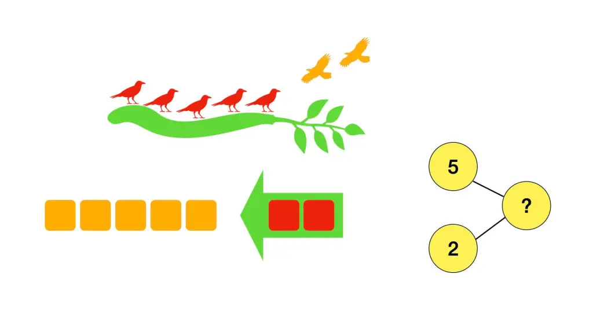
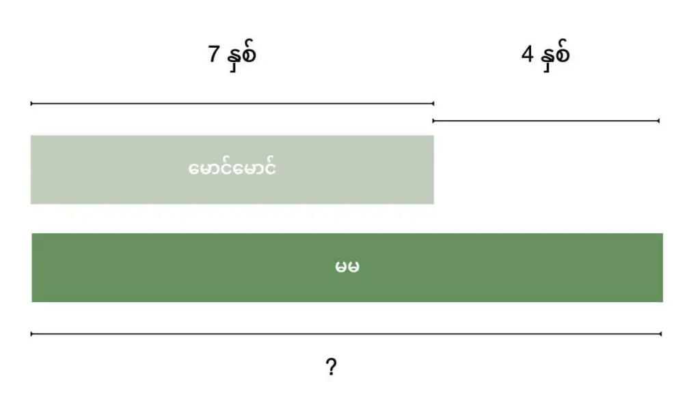
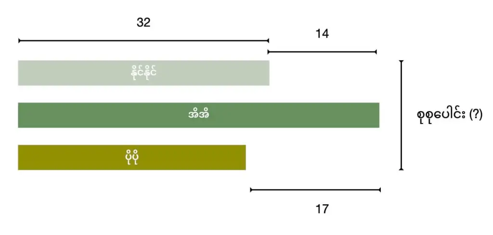
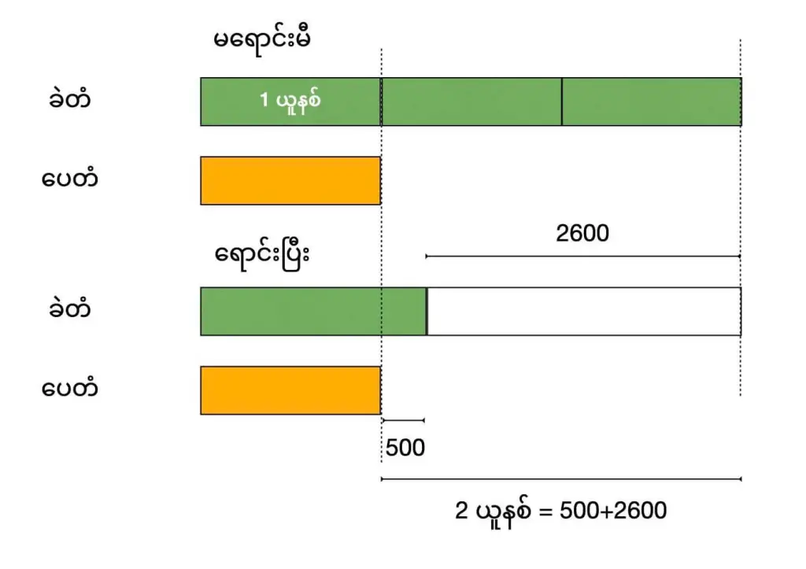
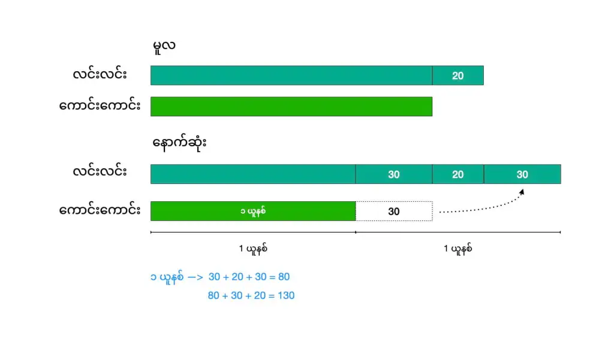
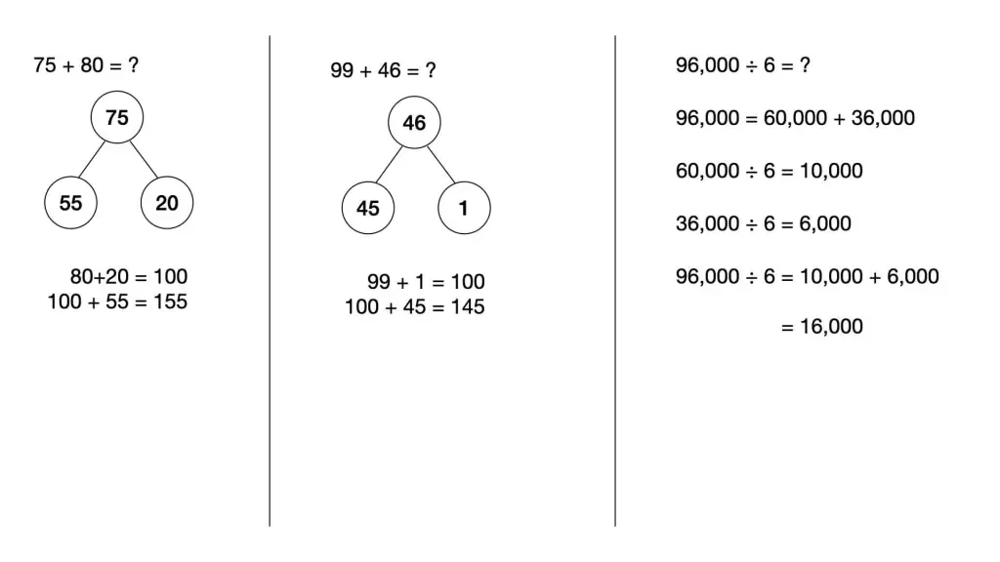

သမရိုးကျသင်္ချာသင်ကြားနည်းနဲ့ Singapore Maths စင်ကာပူနည်းနဲ့ဘာကွာလဲ
သမရိုးကျ သင်္ချာသင်ကြားနည်းမှာ ပထမ ဆရာက နမူနာ ပုဒ်စာ တစ်ပုဒ် နှစ်ပုဒ်ကို အရင် တွက်ပြမယ်။ ပြီးရင် ကျောင်းသားတွေက နမူနာ ပုဒ်စာနဲ့ အလားတူတဲ့ ပုဒ်စာတွေကို ထပ်ခါထပ်ခါ တွက်ခြင်းအားဖြင့် တွက်နည်းတွေကို မှတ်မိသွားစေတဲ့ နည်းဖြစ်ပါတယ်။ စင်္ကာပူ နည်းမှာတော့ ကျောင်းသားတွေဟာ ပုဒ်စာဖြေရှင်းနည်းကို အဓိက သင်ကြားတာ မဟုတ်ပဲ ဒီပုဒ်စာ ဖြေရှင်းဖို့ လိုအပ်တဲ့ သင်္ချာအခြေခံ concept တွေကို အရင် သင်ကြားကြရပါတယ်။ ပြီးရင် ဒီ အခြေခံ concept တွေကို အသုံးပြုပြီး ဖြေရှင်းရတဲ့ ပုစာတွေကို ဖြေရှင်းကြရတာ ဖြစ်ပါတယ်။နောက်တစ်ခု ကွာတာကတော့ စင်္ကာပူနည်းမှာ လက်တွေ့ဘဝမှာ ကြုံတွေ့နေတတ်တဲ့ သင်္ချာ ပြဿနာတွေဖြေရှင်းဖို့နည်းကို အဓိက ဦးစားပေး သင်ကြားပေးပါတယ်။ နေ့တဒူဝ ကြုံတွေ့နေရတဲ့ သင်္ချာ ပြဿနာတွေကို သင်ယူလေ့လာထားခဲ့တဲ့ သင်္ချာ အခြေခံ concept တွေနဲ့ ဘယ်လို ဖြေရှင်းမလဲ ဆိုတာကို ဦးစားပေး သင်ပေးပါတယ်။
နောက်ပြီး စင်္ကာပူ နည်းနဲ့ သမရိုးကျ သင်ကြားနည်း ကွာသွားတာ တစ်ခုကတော့ စင်္ကာပူ နည်းမှာ သင်္ချာ ပြဿနာတွေကို Pictorial approach ခေါ်တဲ့ ပုံနဲ့ အစားထိုး ဖြေရှင်းနည်းပဲ ဖြစ်ပါတယ်။ ဒါဟာ မူလ သမရိုးကျ နည်းကနေ လုံးဝ ခွဲထွက်တဲ့ နည်းလမ်းသစ်လဲ ဖြစ်ပါတယ်။ ဒီနည်းမှာ သင်္ချာပြဿနာတွေကို algrebric equation ခေါ်တဲ့ x,y တွေနဲ့ အစားထိုး ဖြေရှင်းနည်းအစား bar model ရေးဆွဲပြီး ဖြေရှင်းနည်းပဲ ဖြစ်ပါတယ်။ (အောက်တွင်ကြည့်ရန်)။ ဒီနည်းနဲ့ အသုံးပြုပြီး grade 7 လောက်မှာ သင်လေ့ရှိတဲ့ algrebric problems တွေကို grade 4 လေးတန်း ကလေးက ဖြေရှင်းနိုင်ပါတယ်။
Singapore Maths စင်္ကာပူသင်္ချာသင်နည်းစနစ်တွေကဘာတွေလဲ
စင်္ကာပူနည်းနဲ့ သင်ရာမှာ CPA approach လို့ ခေါ်တဲ့ Concrete, Pictorial, Abstract သင်ကြားရေး နည်းလမ်းကို အသုံးပြုပါတယ်။အခြေခံအဆင့် (Concrete Stage)
ဒီအဆင့်က သူငယ်တန်းနဲ့ Grade 1-2 လောက်ကို သင်ကြားတဲ့ နည်းလမ်း ဖြစ်ပါတယ်။ ဒီအဆင့်မှာ သင်ခန်းစာတွေနဲ့ အတန်းတွင်း လှုပ်ရှားမှုတွေကို ဆရာမက ဦးဆောင်သင်ကြားပေးပါတယ်။ ဒီအဆင့်မှာ ကလေးတွေကို ကိန်းဂဏန်းတွေရဲ့ အခြေခံနဲ့ ဂဏာန်းတွက်တဲ့ အခြေခံတွေကို သင်ကြားပေးပါတယ်။သင်ကြားပုံ ဥပမာ
အောက်ပါ ပုဒ်စာလေးကို ကလေးတွေကို ဘယ်လို သင်မလဲ ကြည့်လိုက်ရအောင်ပါ။ကိုင်းပေါ်တွက် ငှက်ကလေး ၅ ကောင် နားနေသည်။ နှစ်ကောင် ထပ်ရောက်လာတယ်။ ကိုင်းပေါ်တွင် ငှက်ဘယ်နှစ်ကောင် ရှိသလဲ။ဆရာမက အတန်းထဲက ကလေး ၅ ယောက်ကို အတန်းရှေ့ကို ထွက်ရပ်စေပါတယ်။ ကလေးတွေက ငှက်ကလေးတွေပေါ့။ ပြီးတော့ အတန်းထဲက ကလေးတွေကို ငှက်ကလေး ဘယ်နှစ်ကောင် ရှိသလဲလို့ မေးပါတယ်။ ပြီးတော့ အတန်းထဲက ကလေး နှစ်ယောက်ကို အတန်းရှေ့ ထပ်လွှတ်လိုက်ပါတယ်။ နောက်ထပ် ငှက်ကလေး နှစ်ကောင် ထပ်ရောက်လာတာပေါ့။ ပြီးတော့ ကလေးတွေကို ငှက်ကလေး ဘယ်နှစ်ကောင် ရှိသွားပြီလဲ မေးပါတယ်။ ကလေးတွေက အမှန် ဖြေနိုင်ရင် ဘာ့ကြောင့် ၇ ကောင် ဖြစ်သွားရတာလဲလို့ ကလေးတွေကို ပြန်မေးပါတယ်။ ပြီးတော့ ဆရာမနဲ့ ကလေးတွေနဲ့ ဒီအဖြေကို ဆွေးနွေးကြပါတယ်။
ရုပ်ပုံပြအဆင့် (Pictorial Stage)
ဒီအဆင့်မှာ ကလေးတွေကို သင်္ချာ ပြဿနာကို ရုပ်ပုံလေးတွေနဲ့ နားလည်အောင် ရှင်းပြပါတယ်။ အောက်ကလို ငှက်ပုံလေးတွေနဲ့ပေ့ါ။
သဘောတရားနားလည်မှုအဆင့် (Abstract Stage)
ဒီအဆင့်ကတော့ သင်္ချာပြဿနာတွေကို Equation တွေအဖြစ် ပြောင်းလဲ တာကို သင်ကြားပေးတဲ့ အဆင့် ဖြစ်ပါတယ်။သင်္ချာပြဿနာများအားဘားဖြင့်ပုံဖေါ်ခြင်း (Bar Modeling used in Singapore Maths teaching method)
သင်္ချာပြဿနာတွေကို ဘားပုံစံ တွေနဲ့ ပုံဖော်ပြီး ဖြေရှင်းတဲ့ နည်းလမ်းဟာ စင်္ကာပူ သင်္ချာသင်ကြားနည်းလမ်းရဲ့ ထူးခြားတဲ့ သင်္ချာပြဿနာ ဖြေရှင်းနည်းလမ်းပဲ ဖြစ်ပါတယ်။ ပုံမှန် အက္ခရာ သင်္ချာ (Algebric equations) တွေကို ဘားတွေနဲ့ ပုံဖေါ်ပြီး ဖြေရှင်းနည်းပဲ ဖြစ်ပါတယ်။ အက္ခရာ သင်္ချာ (Albebric problems) တွေတင် မဟုတ်ပါဘူး၊ ဒီ ဘား မိုဒယ်တွေကို အခြား သင်္ချာ သဘောတရား (maths concepts) တွေမှာလဲ အသုံးချလို့ ရပါတယ်။ ဥပမာ ပြောရရင် အပိုင်းကိန်း (fractions)၊ အချိုး (ratios)၊ ရာခိုင်နှုန်း (percentages) အစရှိတာတွေပေါ့။လက်တွေ့သင်္ချာ ပြဿနာတွေကို ဘားပုံဆွဲပြီး ဖြေရှင်းခြင်းအားဖြင့် ကျောင်းသားငယ်တွေအတွက် ပြဿနာရဲ့ သိကိန်းနဲ့ မသိကိန်း (known and unknown) တွေကို ဆုံးဖြတ်ရတာ လွယ်ကူစေပါတယ်။ ဒီ ဘားတွေဟာ အပေါ်မှာ ပြောခဲ့တဲ့ CPA အဆင့် တွေထဲမှာ Pictorial အဆင့်ကနေ abstract အဆင့်ကို ကူးရာမှာ ပိုပြီး လွယ်ကူစေပါတယ်။ ပိုမိုရှုပ်ထွေးတဲ့ သင်္ချာပြဿနာ တွေကိုလဲ သဘောတရား နားလည်နိုင်ဖို့ အကူအညီ ပေပါတယ်။ ဒီ ဘားမိုဒယ် နည်းလမ်းကို သင်္ချာ သင်ရိုး တစ်လျှောက်မှာ မကြာခဏ အသုံးပြုခြင်းကလဲ ကျောင်းသားတွေရဲ့ သင်္ချာစွမ်းရည်ကို တိုးတက်စေတယ် ဆိုတာကို တွေ့ရှိလာကြပါတယ်။
ဘားမိုဒယ်နဲ့ သင်္ချာ ပြဿနာတွေ ဖြေရှင်းပုံကို အောက်က ဥပမာ တွေမှာ ကြည့်ရှုနိုင်ပါတယ်။
ဥပမာ (၁)
မောင်မောင်ဟာ အသက် ၇ နှစ် ရှိပါပြီ။ သူ့အမ မမ က သူ့ထက် အသက် ၄ နှစ် ပိုကြီးပါတယ်။ မမ ရဲ့ အသက်ဘယ်လောက် ရှိပြီလဲ။
ဥပမာ (၂)
နိုင်နိုင် ပိုက်ဆံ 32 ဒေါ်လာ စုမိပါသည်။အိအိက နိုင်နိုင့်ထက် 14 ဒေါ်လာ ပိုစုမိပါတယ်။
ပိုပို စုငွေက အိအိထက် 17 ဒေါ်လာ ပိုနည်းပါတယ်။
(က) ပိုပို ငွေဘယ်လောက် စုမိသလဲ။
(ခ) ကလေး ၃ ယောက် စုစုပေါင်း ဘယ်လောက် စုမိသလဲ။

ဒီ့နောက် ဒီဘားတွေကို ကလေးနားလည်ရင် ဒီကနေ လိုအပ်တဲ့ အဖြေတွေ ထုတ်တတ်အောင် ကလေးကို ဆက်သင်ပေး ရပါမယ်။
ဥပမာ (၃)
စတိုးဆိုင် တစ်ခုမှာ ရှိတဲ့ ခဲတံ အရေအတွက်ဟာ ပေတံအရေအတွက်ရဲ့ ၃ ဆ ရှိပါတယ်။ စတိုးဆိုင်ဟာ ခဲတံ 2,600 ရောင်းချခဲ့ ရပါတယ်။ ရောင်းချပြီးတဲ့ နောက်မှာတော့ ကျန်ရှိတဲ့ ခဲတံ အရေအတွက်ဟာ ပေတံ အရေအတွက်ထက် အခု 500 ပိုများပါတယ်။ လက်ရှိ နောက်ဆုံးကျန်တဲ့ ခဲတံနဲ့ ပေတံ အရေအတွက် စုစုပေါင်း ဘယ်လောက် ရှိပါသလဲ။ဒီ သင်္ချာ ပြဿနာကတော့ အပေါ်က ပြဿနာ တွေထွက် ပိုအဆင့်မြင့်လာပြီး ပိုရှုပ်ထွေးလာပါတယ်။ ပုံမှန်တော့ ဒါမျိုးကို အက္ခရာ သင်္ချာ (Algebra) နဲ့ ဖြေရှင်းလေ့ ရှိတာပါ။ ဒီနေရာမှာတော့ စင်ကာပူ သင်္ချာနည်းနဲ့ ကျောင်းသားတွေကို ဘယ်လို သင်ကြားပေးလဲ ဆိုတာလေး ပြောပြပါမယ်။

အောက်က ပုံမှာတော့ ခဲတံ ၂၆၀၀ ရောင်းလိုက်တာမို့ မူလ ၃ တုံးကနေ ၂၆၀၀ နှုတ်ရမှာမယ်။ ဒီလို နှုတ်ပြီးတဲ့ အခါမှာ ခဲတံ အရေအတွက်ဟာ ပေတံ အရေအတွက်ထက် ၅၀၀ ပိုပါသေးတယ်။ ပေတံက မရောင်းရတဲ့ အတွက် မူလအတိုင်း ၁ တုံးပါပဲ။ ခဲတံကတော့ ကျန်တာက (ပေတံ+ ၅၀၀) မို့ ပေတံထက် ဘားပိုရှည်ရပါမယ်။ ဒီအစွန်းထွက်က ၅၀၀ နဲ့ ညီမျှပါတယ်။ လျော့သွားတဲ့ အရေအတွက်က ၂,၆၀၀ မို့ ဒီ အရေအတွက်ကို အောက်ကပုံမှာ dotted line နဲ့ မှတ်ထားပါတယ်။ သတိပြုရမှာက ဒီ လျော့သွားတဲ့ ၂,၆၀၀ နဲ့ ကျန်တဲ့ ၅၀၀ ပေါင်းရင် မူလက အတုံး ၂ တုံးနဲ့ ညီတယ် ဆိုတာပါပဲ။ ဒါ့ကြောင့် နှစ်တုံးဟာ 500 + 2600 = 3,100 နဲ့ ညီမျှတယ် ဆိုတာ တွက်လို့ ရပါတယ်။ မေးခွန်းက ကျန်တဲ့ ခဲတံနဲ့ ပေတံကိုပဲ မေးတာမို့ ကျန်တာက ခဲတံ က တစ်တုံးနဲ့ အစွန်းထွက် ၅၀၀၊ ပေတံက တစ်တုံးမို့ စုစုပေါင်း နှစ်တုံးနဲ့ အစွန်းထွက် ၅၀၀ ပါ။ ဒါ့ကြောင့် အဖြေက နှစ်တုံး + 500 = 3,100 + 500 = 3,600 ပဲ ဖြစ်ပါတယ်။ (ခဲတံက ဘယ်နှစ်ချောင်း၊ ပေတံက ဘယ်နှစ်ချောင်းဆိုတာ ပြန်တွက်နေစရာ မလိုတော့ပါဘူး)။
ဥပမာ (၄)
မူလတုန်းက လင်းလင်းမှာ ကောင်းကောင်းထက် ဖန်ဂေါ်လီလုံး အလုံး ၂၀ ပိုများပါတယ်။ ကောင်းကောင်းက လင်းလင်းကို သူ့မှာရှိတဲ့ဖန်ဂေါ်လီလုံးထဲက အလုံး ၃၀ ပေးလိုက်ပါတယ်။ ပေးပြီးနောက်မှာ လင်းလင်းမှာရှိတဲ့ ဖန်ဂေါ်လီလုံးဟာ ကောင်းကောင်းမှာ ရှိတဲ့ အရေအတွက်ရဲ့ နှစ်ဆ ဖြစ်သွားပါတယ်။ လင်းလင်းမှာ မူလက ဖန်ဂေါ်လီလုံး ဘယ်နှစ်လုံး ရှိခဲ့လဲ ရှာပါ။ဒီပုဒ်စာကတော့ နဲနဲ အဆင့်မြင့် သွားပါပြီ။ ဒါက Grade 4 အဆင့်လောက် အတွက် ပုဒ်စာ ဖြစ်ပါတယ်။ ပုံမှန် Algrabra နဲ့ဆို ၇ တန်း၊ ၈ တန်းလောက် သင်လေ့ရှိတဲ့ ပုဒ်စာပါ။

ကောင်းကောင်းက လင်းလင်းကို ၃၀ ပေးလိုက်ပါတယ်။ ဒါ့ကြောင့် အောက်ကပုံမှာ ကောင်းကောင်းရဲ့ ဘားက မူလ အပေါ်က ဘားထက် တိုသွားတာပါ။ ဒီ တိုသွားတဲ့ ပမာဏက ၃၀ နဲ့ ညီမျှပါတယ်။ ဒီတိုသွားတဲ့ ဘားနဲ့ အရွယ်တူ အတုံး ကို လင်းလင်းရဲ့ ဘားမှာ မှတ်ထားလိုက်ပါတယ်။ ဒါ့ကြောင့် အခုအခါမှာ လင်းလင်းက ကောင်းကောင်းထက် မူလက ပိုတဲ့ ၂၀ ရယ်၊ ကောင်းကောင်းဆီက နှုတ်လိုက်တဲ့ ၃၀ ရယ် ပိုသွားပါပြီ။ ဒါ့အပြင် ကောင်းကောင်းဆီက ၃၀ က လင်းလင်းဆီ ရောက်လာလို့ နောက်ထပ် ၃၀ လဲ ထပ်ရလာပါတယ်။
ပုဒ်စာရဲ့ ပေးချက်အရ အခုအခါမှာ လင်းလင်းရဲ့ ဖန်ဂေါ်လီ လုံးအရေအတွက်ဟာ ကောင်းကောင်းရဲ့ နှစ်ဆ ဖြစ်သွားပါပြီ။ ဆိုလိုတာ ကောင်းကောင်းအခု ရှိတဲ့ ဘားနဲ့ အရွယ်တူ ဘား (ဘယ်ဖက်ခြမ်းကအတုံးကြီး) နဲ့ ညာဖက်က အစွန်းထွက်နေတဲ့ အပိုင်း နှစ်ခုဟာ တန်ဖိုး တူသွားပါပြီ။ (မတူဘူး ထင်ရင်တော့ ပုဒ်စာကို အစအဆုံး ပြန်ဖတ်ပြီး ဘားတွေ ဆွဲထားတာကို သေခြာ ပြန်ကြည့်ပါ ခင်ဗျာ)။ ဒါဆိုရင် ကျန်တာက ဆက်တွက်လို့ ရသွားပါပြီ။ ညာဖက်က အစွန်းထွက် ဘားက 30+20+30 = ၈၀ မို့ အခု လင်းလင်းမှာ ဖန်ဂေါ်လီ အလုံး ၁၆၀ ဖြစ်သွားပါပြီ။ ဒါဆို မူလက လင်းလင်းမှာ ရှိတဲ့ ဖန်ဂေါ်လီဟာ 80+30+20=130 ဖြစ်ပါတယ်။
ဒီလို ဘားမိုဒယ်နဲ့ တွက်နည်းစနစ်ဟာ Algebra တွက်နည်းနဲ့ ယှဉ်လိုက်ရင် ဘယ်လောက်အထိ လွယ်ကူသွားတယ် ဆိုတာကို သိရအောင် algrbra နည်းနဲ့ x,y တွေ အစားထိုးပြီး equation ချ တွက်ကြည့်လိုက်ပါ။ ဒါဆို ဘာ့ကြောင့် စင်ကာပူက ကျောင်းသားတွေ သင်္ချာ တော်ရတယ် ဆိုတာ သဘောပေါက်မှာပါ။
စိတ်တွက်သင်္ချာ (Mental Maths)
စင်္ကာပူ သင်္ချာသင်နည်းရဲ့ နောက်ထူးခြားချက် တစ်ခုကတော့ စိတ်တွက်နည်းတွေကိုလဲ အလေးထား သင်ကြားတာ ဖြစ်ပါတယ်။ စိတ်တွက်နည်းတွေ သင်ကြားခြင်းဖြင့် ကျောင်းသားတွေ အတွက် ကိန်းဂဏန်း တွေနဲ့ ပါတ်သက်ပြီး နက်ရှိုင်းတဲ့ နားလည်မှုကို ရရှိစေနိုင်ပါတယ်။ ဒါ့အပြင် ကိန်းဂဏန်းတွေ ကိုင်တွယ်ဖြေရှင်းရာ မှာလဲ သင့်တော်တဲ့ နည်းလမ်းတွေကို အသုံးပြု တတ်လာစေပါတယ်။ဒီ စိတ်တွက်နည်းတွေမှာ ကိန်းဂဏန်းတွေကို သမားရိုးကျ မဟုတ်တဲ့ နည်းလမ်းတွေနဲ့ ခွဲခြမ်းစိတ်ဖြာပြီး တွက်ချက်မှုတွေ ပြုလုပ်တဲ့ နည်းလမ်းတွေ ဖြစ်ပါတယ်။ ဒီလို တွက်ချက်ရာမှာ တွေးခေါ်စဉ်းစားတဲ့ ဖြစ်စဉ်ကို အထောက်အကူ ပြုဖို့ ဂဏန်းတွေကြားက ဆက်စပ်မှု (number bond) တွေကိုလဲ သင်ကြားပေးပါတယ်။
အချို့သော အခြေခံ စိတ်တွက်နည်းတွေကို ပထမတန်း (Grade 1) ကတဲက စပြီး သင်ကြားပေးပါတယ်။ အတန်းကြီးလာ တာနဲ့အမျှ ပိုမို မြင့်မားတဲ့ စိတ်တွက်နည်းတွေကို သင်ကြားပေး သွားပါတယ်။ ဒါ့အပြင် ကျောင်းသားတွေကိုလဲ သူတို့ကိုယ်ပိုင် စိတ်တွက်နည်းတွေ ရှာဖွေတွေ့ရှိနိုင်ဖို့ အားပေးပါတယ်။
အောက်မှာ စိတ်တွက်နည်းလမ်းတွေ ထဲက အချို့ကို ဖော်ပြပေး ထားပါတယ်။
